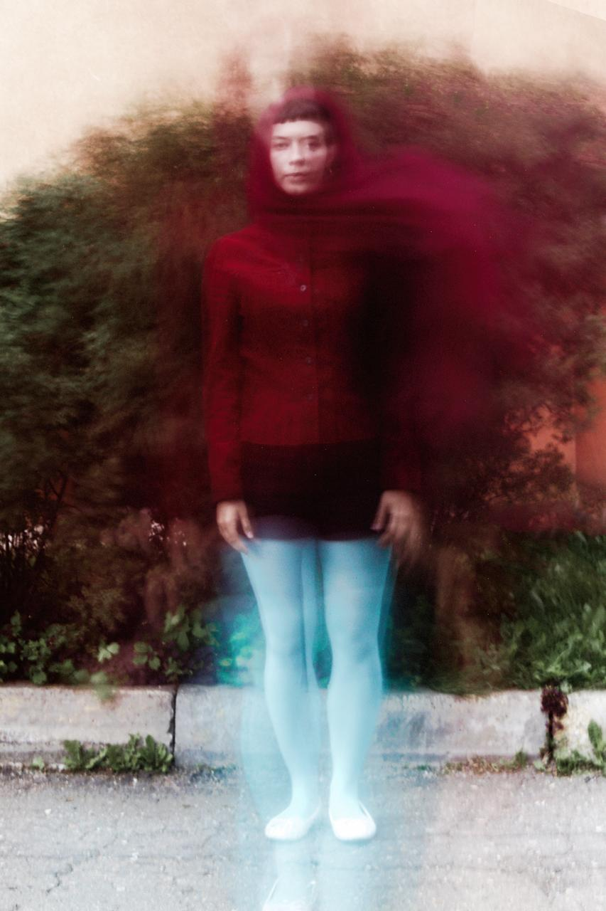

Photographer & Visual Artist
Sasha
Kljuchenkow
Portrait · Fashion · Contemporary Art
Documentary · Landscape
Selected work
01—05

About
Photography
is my language.
Contact

Photographer & Visual Artist
Portrait · Fashion · Contemporary Art
Documentary · Landscape
Selected work
01—05
About
Contact